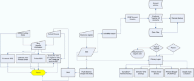

While deep thinking my “Not a VLE” Project I began doing a topology graph for schools information and data flow, part of this process lead me into looking at processes that local servers do to ensure teaching and learning is continuous.
When I say that Primary School ICT is complicated, some of you may be shocked by just how complex it is. An average school may have just 2 servers and 50 or so clients but the amount of processes involved to deliver the perfect desktop experience is huge.
A simplified diagram of an average Primary School’s ICT from a process point of view:

Recently we have found an upsurge in schools buying EEE’s with XP Home and we have considered leaving Home on and seeing how they get on:
Here are the initial negative reasons why XP Home without a domain controller(server) is not suitable for a school…
(A Pupil may also be a teacher)
The problems:
- No Account restrictions - Pupils can break their device.
- No Centrally manageable Anti-Virus - Pupils may get a virus and the school wouldn’t know about it.
- No Windows update monitoring - Pupils may not have the latest windows on their device so may be at risk.
- No Authentication to printers - Pupils would not be able to 1 click print as easily.
- No ability to deploy software - Software would not be able to be “pushed” from the server meaning each piece would have to be individually installed.
The Fixes:
- No Account restrictions - Keep an image ready to restore from DVD/USB HD, this is not a complicated process and should be done as part of best practice anyway. All locally saved documents are remotely backed up using either Syncplicity, humyo or remote backup from Primary Technology
- No Centrally manageable Anti-Virus - An organization level web managed antivirus web2 application
- No Windows update monitoring - Teach pupils to periodically check for the latest windows update
- No Authentication to printers - Stop printing, use email, blog, etc.
- No ability to deploy software - Use web2 applications - Legacy applications could be supported by Thinapp or an app publishing platform?
The advantages to the Fixes:
- No Account restrictions - Increased Data protection as pupil information only lies on the MIS server (Which could eventually be easily hosted)
- No Centrally manageable Anti-Virus - Much easier for technical support providers to manage large number of devices and for schools to check status.
- No Windows update monitoring - Children will know how to update their systems in the future.
- No Authentication to printers - Record is kept of what/when is sent and we don’t waste paper/ink
- No ability to deploy software - Web2 applications tend to be available anywhere and do not require updating.
The disadvantages to the Fixes:
- No Account restrictions - Time spent in restoring devices and loss of local copy of data will mean a restore process from remote backup.
- No Centrally manageable Anti-Virus - Increased internet bandwidth usage
- No Windows update monitoring - Large updates could take a long time.
- No Authentication to printers - Email, blog systems could be abused.
- No ability to deploy software - Web2 companies and/or their hosting providers can have issues leading to downtime and unavailability.
The other angle to approach this from is a web3 angle which would be a cloud OS however for true data protection a school should always keep their own copy of any document they have worked on.
{kind=link}